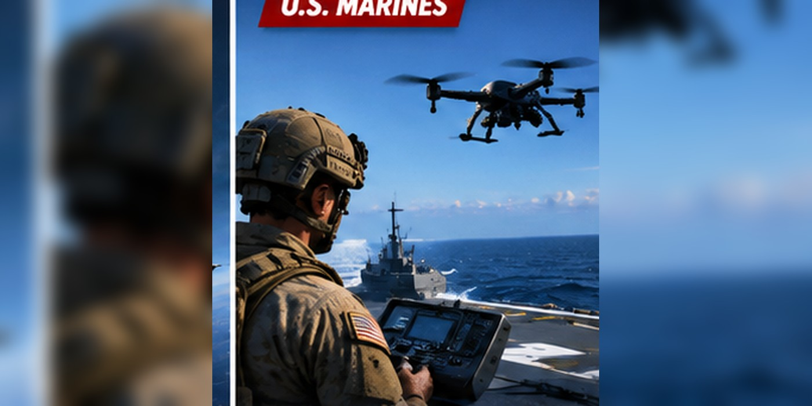

Neros Archer Drones Fly From USS Boxer: How Marine Sea-Based Drone Tactics Are Changing
Marine units have flown small strike drones from ships in the Arabian Sea during training, not a reported combat strike.

Small drones go to sea
Marines with the 11th Marine Expeditionary Unit flew Neros Archer first-person-view drones from USS Boxer and USS Portland during training in the Arabian Sea. The exercises tested launching, tracking and recovering aircraft from moving ships.
What the exercise demonstrated
The flights simulated precision strikes and gave Marine attack-drone teams practice dealing with shipboard wind, movement and other real-world conditions. The exercise also included work on defending ships against small drones.
What is Neros Archer?
Archer is a small first-person-view drone that the Marine Corps is incorporating into its forces. Reports describe a speed above 90 miles per hour, an approximately 20-kilometer range and a payload around five pounds.
Training is not combat
The Arabian Sea flights were exercises. Reports of simulated precision strikes should not be presented as confirmed attacks on enemy targets.